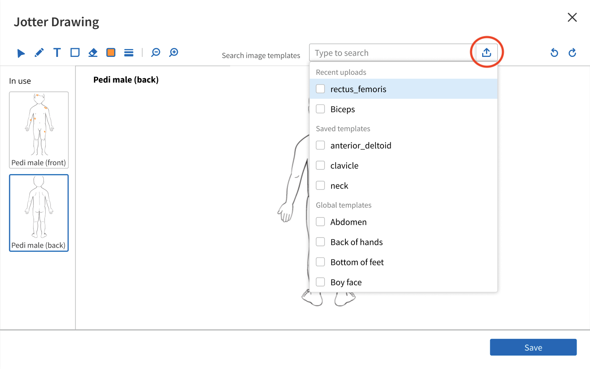
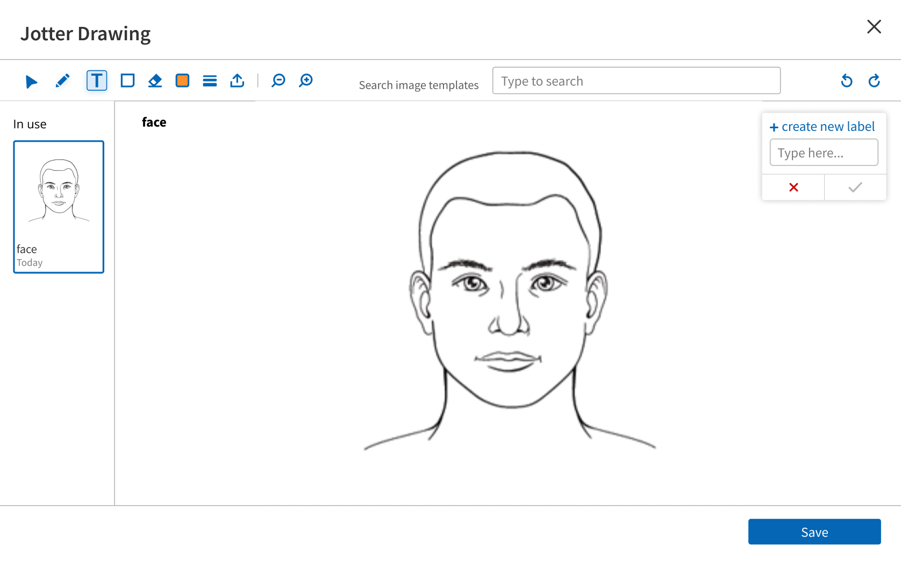

athenahealth
UX Design Intern
Jun - Aug 2022
About athenahealth
Based in Watertown, Massachussetts, athenahealth is a cloud-based SaaS company that provides network-enabled services, mobile apps, and data-driven insights to hospitals and medical organizations.
Athenahealth drives clinical and financial results through the expansion of their revenue cycle management, clinical record, and patient engagement services, and the opening of their network to other partners, care settings, and providers.
Athenahealth's vision: To create a thriving ecosystem that delivers accessible, high-quality, and sustainable healthcare for all.
My Role
I served as the sole UX Designer within a scrum team consisting of a Product Manager and four Software Developers. I was responsible for...
- Conducting user research and framing the problems to be solved
- Creating and iterating on designs for an improved experience
- Validating new designs through concept validation and usability testing
- Identifying success metrics and evaluating the success of the project
The Challenge
The problem space revolved around revamping the Jotter tool, a drawing application that allows providers to capture clinical findings and notes in a visual manner with images and annotations. This tool exists within athenaNet, athenahealth's electronic health record system. Certain specialties such as dermatology rely heavily on the Jotter for documentation.
The original Jotter (as seen below) had an old-fashioned UI that could benefit from modern touches to allow for a more seamless and delightful user experience. Moreover, this tool's antiquated design forced users to develop odd workarounds for their needs (something I will expound upon later). There was an opportunity to improve the usability and feature set of the Jotter.
Meeting expectations: Build a functioning version of the Jotter tool on new tech, built to parity, by the end of the summer.
Exceeding expectations: Include features and functionality beyond parity that were learned from user research during the summer.
Discovery
My initial research aimed to capture how clinicians currently use the Jotter tool and how it might be improved. I picked up where others had left off, as this project was initially conceived earlier in the year, but was dropped during the discovery phase. I...
- Analyzed the existing research
- Interviewed two internal providers and seven external clinicians, selected from a list of specialty providers who were known to have used the Jotter on a regular basis
- Conducted Voice of the Customer (VoC) analysis, where I sifted through customer feedback boards for the Jotter tool
Key Takeaways
Primary users of the Jotter tool are specialty providers (e.g., Gynecologists, Dermatologists, and Cardiologists).
A typical annotation might look like this:
I thematically clustered the feedback I recieved from interviees and VoC analysis. Much of this feedback fell into one of three categories: usability-related, specialty-specific, or related to patient communication; the vast majority of which fell into usability-related issues, like making it easier to find and upload custom templates. This was especially the case since the original Jotter was a particularly clunky and outdated tool. For instance, the sea of checkboxes for selecting anatomical templates that dominated the header of the application often left clinicians endlessly searching for the appropriate template, wasting valuable patient-facing time. Or, as was the case for a Dermatologists I spoke to, he uploaded excessively large templates to counteract a large preset drawing stroke width for each patient encounter.
A common theme across this research, however, was the desire to minimize the number of clicks during and after an encounter in order to save valuable patient-facing time.
“…our goal is to sort of minimize clicks and be able to get out of the the encounter around the same time we're leaving the room so we don't have a huge burden charting to do later on.”
-Dr. X
This theme fueled the way I prioritized the features I wanted to implement in the redesign.
New Tool, New Look
The new Jotter tool will provide users with a streamlined interface that enforces less clicks and more time facing the patient. Included in this redesign are features that clinicians have been asking for:
- The ability to upload templates or images directly in Jotter
- The frequently used label tool
- A dropdown menu for template selection
- A revamped tool set
Uploading Images/Templates Directly Into the Jotter
Key Terms:
Template = anatomical diagram
Image = photograph
User Requirements
- Ability to upload patient photos or procedures (and annotate on them) directly from the user's local system into the Jotter canvas
- Automatically (as opposed to manually) tie images to the current patient encounter notes
- Have images appear in the HPI, ROS, Physical Exam, A/P, and Full Encounter Summary sections of the encounter
Solution
I placed an upload button in a highly visible place on the canvas (circled in red on the first frame), directly next to the template dropdown menu, so that clinicians would associate the upload funtionality with the list of uploads in the dropdown menu.
I also included a drag and drop space for easier uploading and a status bar to provide the user with feedback on the progress of their current upload(s).
Once all files have been uploaded, they appear in the dropdown menu and on the canvas.
The Frequently Used Label Tool
Clinicians (especially Dermatologists) waste precious time labeling their marks with qualifiers like biopsy, lesion etc., often resorting to shorthand/acronyms to describe their drawings. These clinicians see the same or even redundant cases where they will rewrite/redraw the same annotation repeatedly for each encounter.
User Requirements
- Enforce fewer clicks when marking up the canvas with text and annotations
- Allow for the creation of custom stickers that represent certain procedures, lesions, etc. that can be saved and used for future encounters
Solution
I created a modified version of the text tool to address the aforementioned user requirements. Once a user creates a label, the label remains on the right hand pane of the canvas for all future encounters until the user deletes it.
"LAC" is shorthand for Laceration.
The labels to the right may be placed anywhere on the canvas.

A Multi-Select Dropdown Menu for Easier Images/Template Selection
The current Jotter lists all of the user's saved templates on the header of the UI, forcing users with several saved templates to have to search through a sea of checkboxes to select the template that they want to use. This makes the template selection process overwhelming, clunky, and reduces the size of the drawing pane.
User Requirements
- Make it easier to find images/templates -anything is better than searching through a sea of checkboxes
- Implement a search functionality, enabling users to search for their desired images/templates
- Maintain the ability to select multiple images/templates at once
- Preserve more space at the header of the tool, the original template selection took up too much canvas space
Solution
For the redesign, I created a dropdown menu with search functionality, a familiar web component for users. This dropdown menu is split into three sections for quick access: recent uploads, saved templates (should the user choose to save his/her templates for future use), and global templates (athenaNet provided templates). Selected images/templates appear in the left hand pane under "In use," where the user may toggle between his/her selections.
A Revamped Toolset
User Requirements
Beyond the tools needed to meet parity (i.e., the drawing, text, eraser, stroke width, and stroke color tools), users also requested...
- a selection tool to select and manipulate/delete items on the canvas
- a shape tool (circle, square, 'X', and arrow) which would serve as a means of clinical shorthand
- undo/redo buttons to quickly undo/redo any changes made on the canvas
- zoom in/out and pan to move freely around the selected image or template
Solution
These tools were placed in the header. Below is the shape tool, which upon selection produces a popup where the user may select from any of the shapes and drop them on the canvas. Once placed on the canvas, the selection tool is automatically selected so that users have the ability to move and manipulate the width and height of the shape.
You can see all of these tools in action + the other new features as described in this redesign in the demo below:
Concept Validation
Armed with a boat-load of hi-fi wireframes, it was now time to validate my work with clients. With the help of athenahealth's productive DesignOps team, I sent out a concept validation survey to 53 athenaNet users. This survey, the results of which I have included below, aimed to gauge clients' impressions of the Jotter tool's new look and function.
The feedback was both enlightening and positive. There was a statistically significant 54.9% (3x) increase in the number of users satisfied with the proposed redesign. Moreover, the majority of respondents found uploading images and templates directly through the Jotter tool to be "extremely helpful," further validating the utility of this new feature. Lastly, 75% of respondents agreed that the new Jotter tool would increase their productivity.
I also received feedback for areas to explore via the short response section. Though many of these requests were practice-specific and somewhat niche, several were brought up during interviews, so they should be considered by whoever picks up this project next.
Accomplishments and the Next Steps
My team definitely exceeded expectations and were proud of all that we accomplished over the course of the summer! Of the features we considered implementing based on the discovery research, those highlighted in yellow on the chart below are those that we finished and prioritized for the duration of this internship. The outstanding features should be considered by whoever moves forward with this project.
- As we continue to move beyond parity, enhancement that
- are heavily requested by clients and
- remove clicks/steps for users will be prioritized
- Once integrated into athenaNet, we want to conduct usability tests to measure
- time per patient
- number of clicks
- overall user satisfaction
- Experimental Release (~12 users): Want to monitor key workflows and success metrics as defined in the Rollout Plan
The Outcome
I am most proud to say that this work resulted in more than a 3x increase in user satisfaction for the Jotter tool and will have impacted 79 athena clients. Furthermore, my team's work received strategic value recognition from the CEO and was prioritized for production.
During this internship, I accomplished my personal learning objectives. I…
- Carried out the design process from start to almost finish
- Worked within a scrum team and learned how to operate within the Agile framework
- Learned from experienced designers, my peers, and my mentor
- Spoke with real clients and impacted their workflow in a meaningful way (my favorite part of this internship)
I would like to thank my mentor Yiran (ybuckley@athenahealth) and my manager Denise (dlynshue@athenahealth.com) for providing me loads of support and a wonderful experience this summer!
What I have described here is a high level overview of the project. If you would like to hear a more in-depth version of all that was presented above, feel free to connect with me!